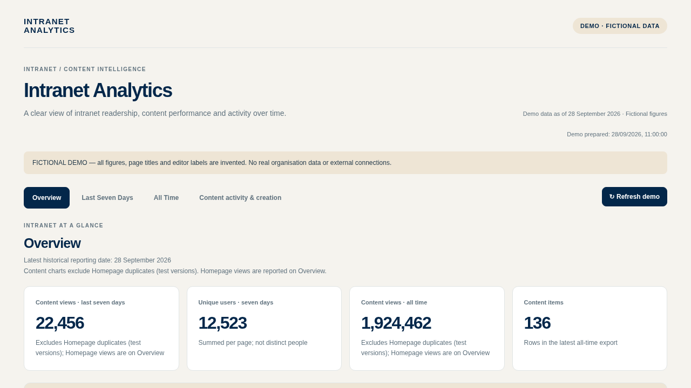
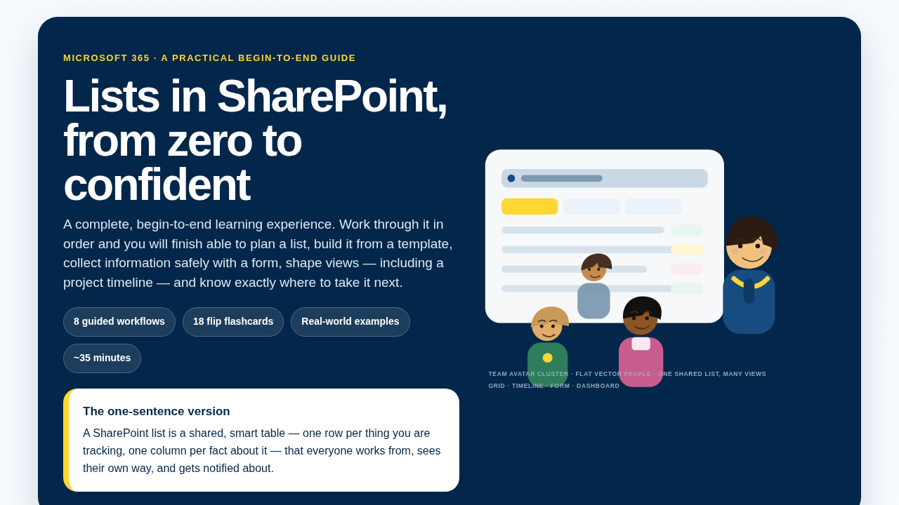
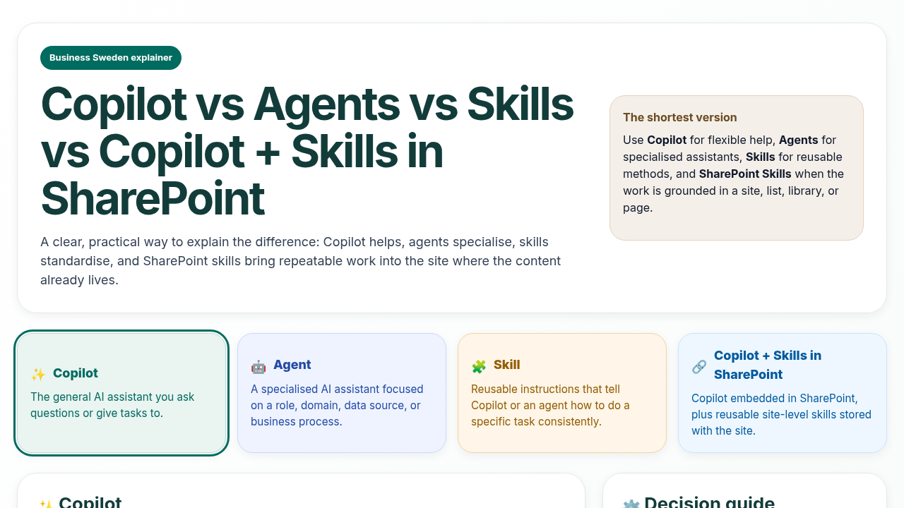
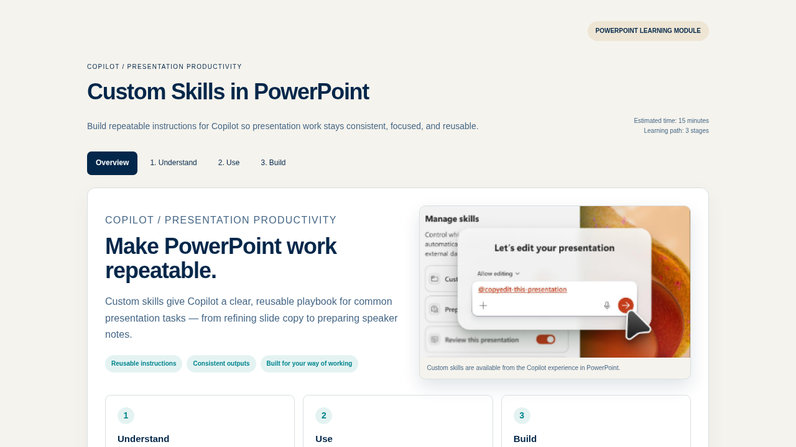
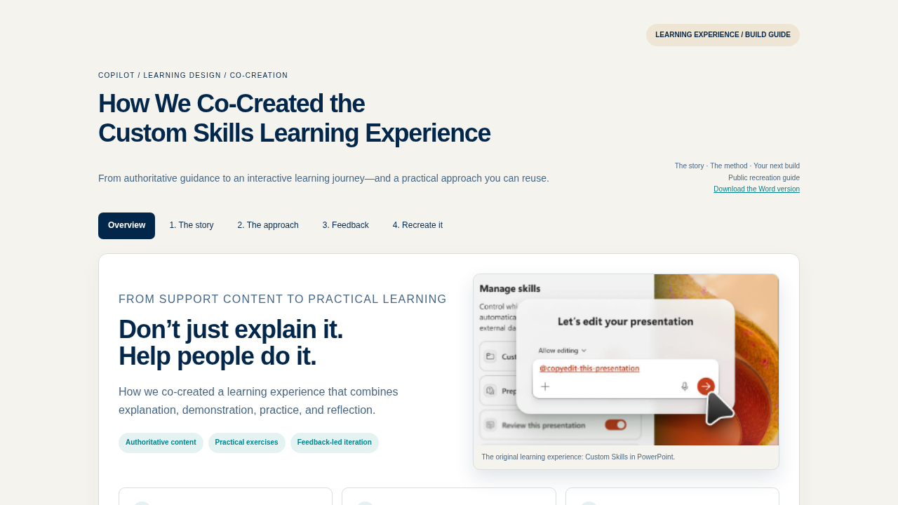
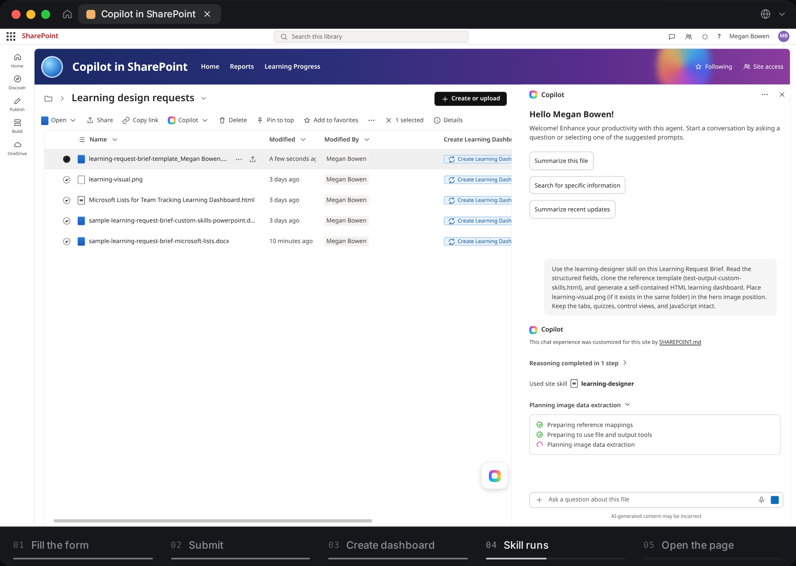
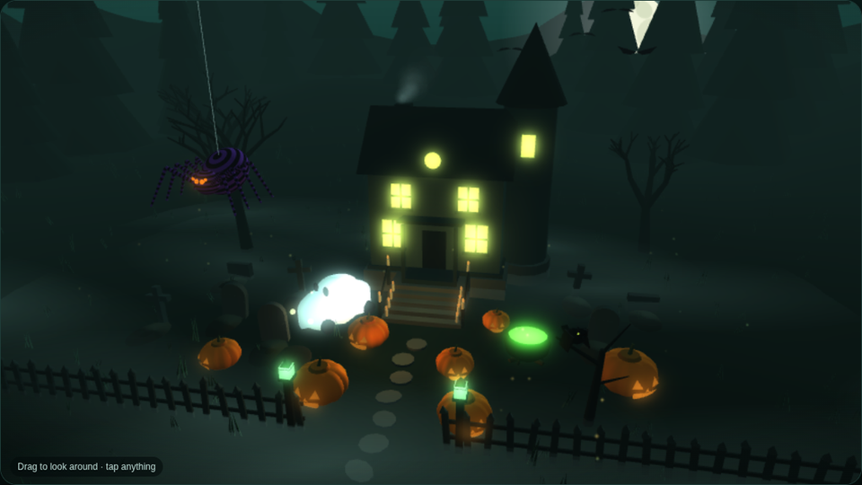
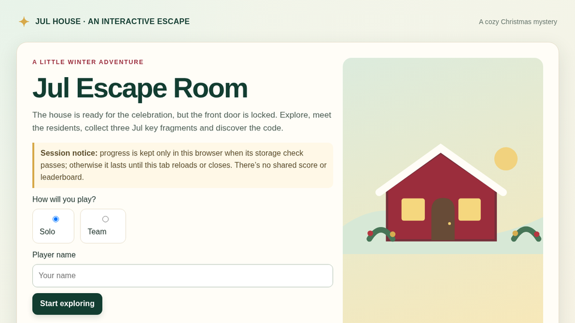
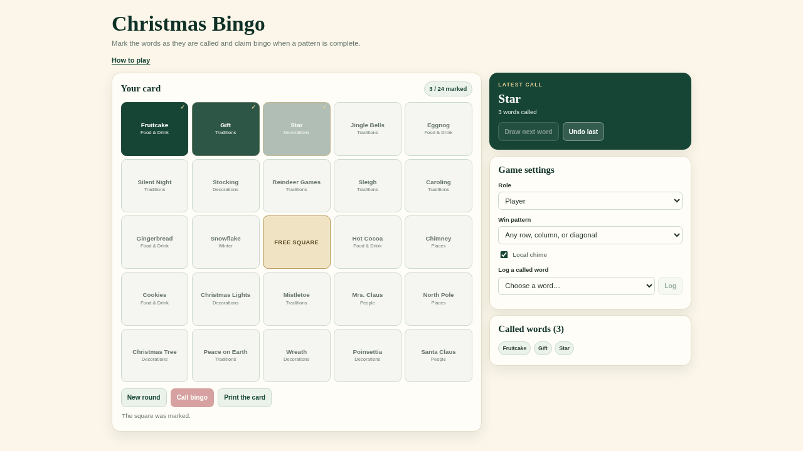
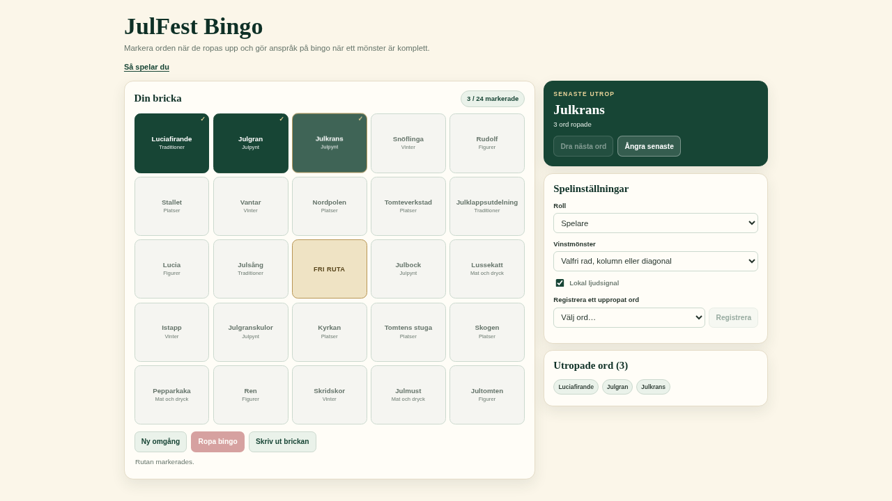

-

Analytics
Intranet Analytics — Fictional Demo
A fictional intranet analytics view of readership, content performance, and activity over time.
-

Learning
Lists in SharePoint
A begin-to-end learning experience for Microsoft Lists in SharePoint, with a learning path, flip cards, and guided workflows.
-

Explainer
Copilot, agents, and skills
A practical comparison of Copilot, agents, and skills in SharePoint, and when to use each.
-

Learning
Custom Skills in PowerPoint
An interactive module for understanding, using, and building custom skills in PowerPoint.
-

Learning
How We Co-Created the Custom Skills Learning Experience
The story behind the Custom Skills in PowerPoint module, and a reusable starter prompt for building your own.
-

Demo
Learning Designer: from request form to dashboard
An animated demo of a learning request form becoming an interactive HTML learning dashboard. Fictional demo persona.
-

Seasonal
Halloween Haunt
A misty, moonlit haunted yard you can explore in 3D, with optional sound, keyboard controls, and reduced motion.
-

Seasonal
Jul Escape Room
A Christmas escape room with six puzzles. Explore the house, collect three Jul key fragments, and open the front door.
-

Seasonal
Christmas Bingo
A Christmas bingo game with a shuffled 5×5 card, Caller and Player modes, and a verified Bingo for a line, four corners, or a full card.
-

Seasonal
JulFest Bingo
A Swedish JulFest bingo game with a shuffled 5×5 card, Utropare and Spelare modes, and a verified Bingo for a line, four corners, or a full card.